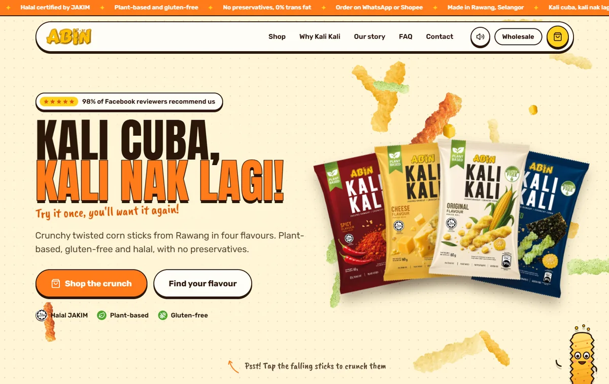
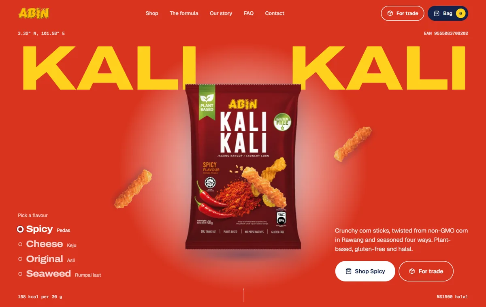

Website concepts for Kali Kali, October 2026
Two websites. One crunch.
Both concepts are complete seven-page sites built on the same real content: your four flavours, the facts on your packs, the trade specs and the affiliate programme. Open each one on a laptop and pick the direction that feels most like ABIN.

Kali Nak Lagi!
Playful flavour-pop. Chunky cartoon outlines, a corn-silk canvas and corn sticks raining down the hero, loud and fun like the crunch itself.
- A hero full of falling corn sticks: tap them to crunch, with a sound you can mute
- A pinned flavour scene that turns the page red, cheddar, cream or blue as you scroll
- Kali the corn-stick mascot, a flavour quiz, jelly buttons and circle-wipe page transitions
Colours
Open Kali Nak Lagi!
Jagung Rangup
Sharp and vibrant. Bold colour blocks that change with every flavour, wide confident type and one pack that travels with you down the page.
- A Kali Kali pack that turns and travels down the home page, then bursts into corn sticks
- Every section takes a flavour colour, and “A day with Kali Kali” scrolls sideways
- A shop for snackers and for businesses, with EAN-13 barcodes, carton sizes and an enquiry list
Colours
Open Jagung Rangup
What is real and what is a placeholder. Flavours, calories, barcodes, carton sizes, certifications, the factory, the expos and the affiliate programme come from ABIN’s packs, catalogue, packaging sheet and social pages. The 30 g and Variety 4-pack prices and every review are placeholders to confirm before launch.